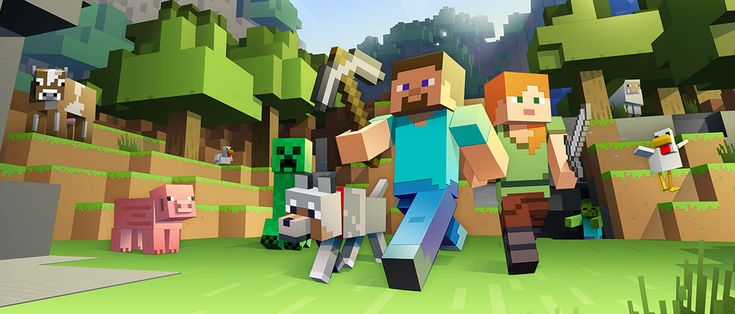

Timeline Persahabatan
Muji dan Yofa telah bersahabat selama:
05 Agustus 2019 Senin 07:25:52
SMKN 1 ACEH BARAT DAYA
Kenangan Bersama
Yofa adalah Berikut adalah.
Permainan

Minecraft
Ben 10

Plants vs Zombie